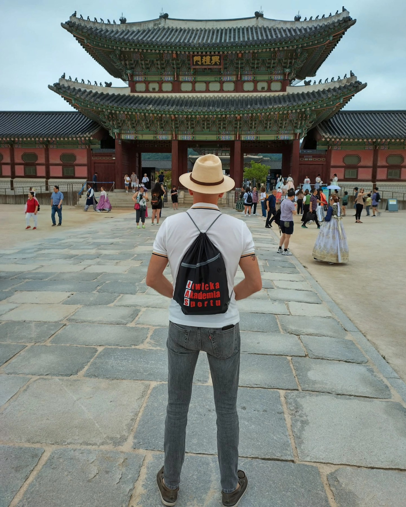
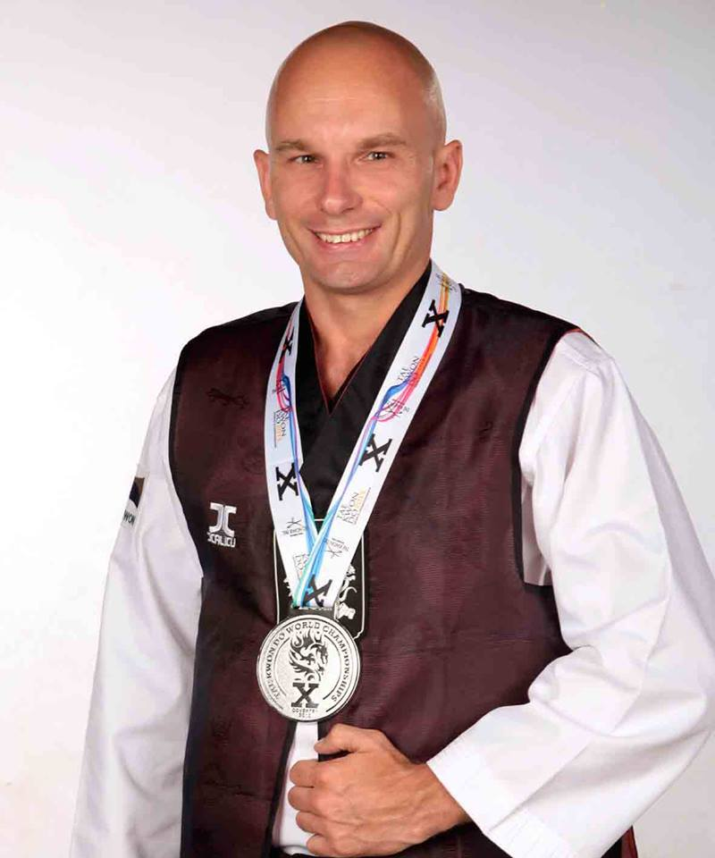

Społecznik, sportowiec, oddany swojej pracy nauczyciel, podróżnik,
prezes Łowickiej Akademii Sportu. Inicjator wielu akcji na rzecz
propagowania sportu i rekreacji wśród dzieci, młodzieży(warsztaty,
spływy i pikniki kajakowe). Ekspert koreańskiej sztuki walki i
samoobrony Taekwondo ( Grandmaster 7 th dan black belt Chung Do Kwan
Korea)Trener reprezentacji Polski na Akademickie Mistrzostwa Świata,
Mistrzostwa Europy i Letnią Uniwersjadę w Korei. Trener i wychowawca 5
krotnych Mistrzów Polski w Taekwindo i pierwszego wicemistrza świata w
parataekwondo (Lozanna, 2013). Jako uznany szkoleniowiec, na
zaproszenie klubów sportowych i narodowych federacji prowadził
seminaria dla sportowców w Nepalu, Bali i Kolumbii. Doskonale
sprawdził się jako dyrektor organizacyjny imprez sportowych o zasięgu
ogólnopolskim (czterokrotna organizacja Mistrzostw Polski Taekwondo
wraz z MSiT (Łowicz, 2010, 2011, 2012, 2014) oraz organizacja finałów
Ogólnopolskiej Olimpiady Młodzieży „Łódzkie 2013” w Łowiczu w
dyscyplinie Taekwondo Olimpijskie). Zaangażowany w propagowanie
kultury koreańskiej na Ziemi Łowickiej (tytuł honorowego Ambasadora
Korei Południowej) We współpracy z Ambasadą Korei Południowej Centrum
Kultury Koreańskiej w Warszawie zorganizował w Łowiczu Dni Kultury
Koreańskiej (2009, 2011, 2013, 2014). Twórca Akcji Bezpieczna Kobieta
(w latach 2010-2023 w bezpłatnych szkoleniach w zakresie samoobrony i
pierwszej pomocy przedmedycznej wzięło udział 900 kobiet). Inicjator i
główny koordynator projektu Budżetu Obywatelskiego: „Plaża nad Bzurą”
(2017). Na terenie powiatu łowickiego wypromował turystykę kajakową
(warsztaty kajakowe, stworzenie przystani kajakowych i szlaku
kajakowego na Bzurze).


Twórca społecznej akcji „Żyj z pasją” Zorganizował wyprawę „Kajakiem
przez Bałtyk w 1050. rocznicę chrztu Polski (2016). Inicjator
zakończonej sukcesem „Sztafety Bałtyckiej łodzią wiosłową przez
Bałtyk. W 100. rocznicę odzyskania niepodległości”. Uhonorowany złotą
odznaką AZS za osiągnięcia sportowe, Medalem Doktora Ferdinando
Palasciano Barii, tytułem Łowiczanina Roku 2006, wyróżnieniem na
Festiwalu Kolosy za Super Wyczyn Roku 2006, brązową odznaką „Zasłużony
dla sportu” z Ministerstwa Sportu i Turystyki , nagrodą Oh Hyun Deuka,
Prezydenta World Taekwondo Headquarters Kukkiwon Korea oraz nagrodą
Prezydenta World Taekwondo Federation, dr Chungwon Choue - za pracę na
rzecz rozwoju taekwondo na świecie. Odznaczony przez prezydentów RP
Lecha Kaczyńskiego i Bronisława Komorowskiego Brązowym i Srebrnym
Krzyżem Zasług za wyróżniającą się pracę edukacyjną i osiągnięcia
sportowo-podróżnicze.Odznaczony przez Prezydenta Rzeczypospolitej
Polskiej Andrzeja Dudę Krzyżem Kawalerskim Orderu Odrodzenia Polski za
wybitne zasługi na rzecz rozwoju i upowszechniania sportu. Za
wieloletnia pracę w szkole na rzecz rozwoju szkolnictwa został
odznaczony Medalem Komisji Edukacji Narodowej przez Ministra Edukacji.
W latach 2019-2023 pracował jako zastępca dyrektora w Urzędzie
Marszałkowskim Województwa Łódzkiego w Departamencie Sportu i
Turystyki i Departamencie Administracji i Społeczeństwa
Informacyjnego.